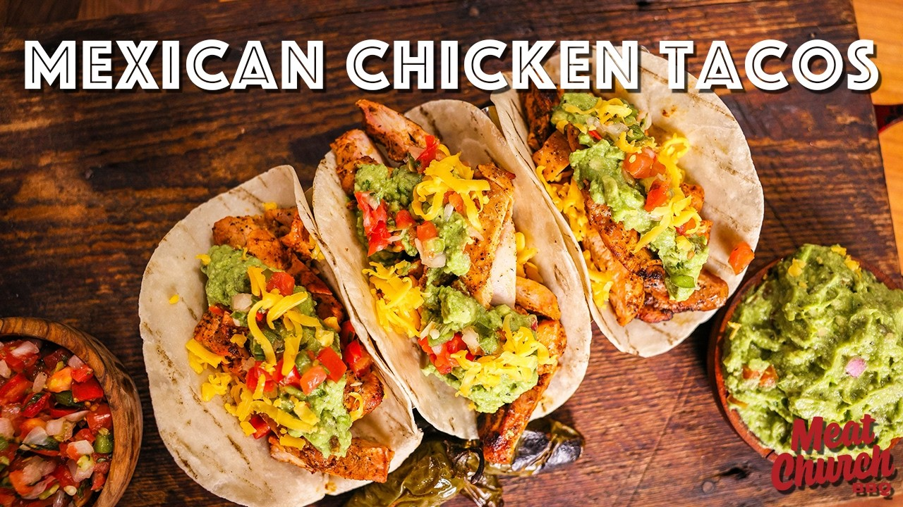

| Course | Main Dish |
| Categories | Chicken, Wrap |
| Collections | Grill, Meat Church BBQ |
| Source | Meat Church BBQ – YouTube |
| Notes | see “Notes” below |

Built from the video's narration and description. Meat Church has a full measured recipe at meatchurch.com/blogs/news/mexican-chicken-taco, but the page blocks automated fetching, so quantities that weren't said on camera are listed as gaps. A few amounts below (whole can of jalapeños, 1 stick butter, marinate times) are from Meat Church's own recipe summary.
Boneless, skinless chicken thighs, trimmed of excess fat (quantity not stated)
1 can pickled jalapeños (the video uses La Costeña) — the entire contents, jalapeños and juice
Meat Church Garlic & Jalapeño BLANCO (regular Blanco or Holy Cow also work)
1 stick butter, melted
Cholula hot sauce, to taste
Tortillas (the video griddles fresh/raw tortillas)
Fresh guacamole
Pico de gallo
The grilled jalapeños from the marinade
Optional: shredded cheddar, sour cream, extra hot sauce
Trim excess fat and any thin/errant pieces from the chicken thighs.
Put the thighs in a container (bowl, zip-top bag, or vacuum bag) with the entire can of pickled jalapeños — juice and peppers — making sure the chicken is submerged. Seal and refrigerate about 4 hours (at least 2; up to 24 for more heat — 24 hours is too spicy for most kids).
Remove the chicken from the marinade and pat dry. Season moderately on both sides with Garlic & Jalapeño BLANCO. Let it rest about 15 minutes so the seasoning adheres.
Melt the stick of butter and stir in Cholula hot sauce to taste — this is the baste.
Prepare a grill for medium-high direct heat. Grill the thighs, basting with the butter–hot sauce mixture; cook about three-quarters of the way through before flipping, then finish to an internal temperature of 165°F (thighs can go higher). Put the marinated jalapeños on the grill too and cook until done.
Rest the chicken (a lidded bowl keeps it hot and catches the juices), then slice or chop it.
Warm or griddle the tortillas. Build tacos with the chicken, guacamole, pico de gallo, grilled jalapeños, and any optional toppings.
Thighs are used for flavor and juiciness; breast works if you prefer.
The marinade adds a mild tang and extra moisture, not a lot of heat on its own.
Control the heat with the baste: skip the Cholula-butter for kids; use more hot sauce to crank it up.
Meat Church's guacamole and pico de gallo recipes are on their website.
Gap in this export: Quantity of chicken thighs
Gap in this export: Exact amount of BLANCO seasoning and of Cholula in the baste
Gap in this export: Number of tortillas / servings
Gap in this export: Prep and cook times
Gap in this export: Guacamole and pico de gallo recipes (on the Meat Church site)